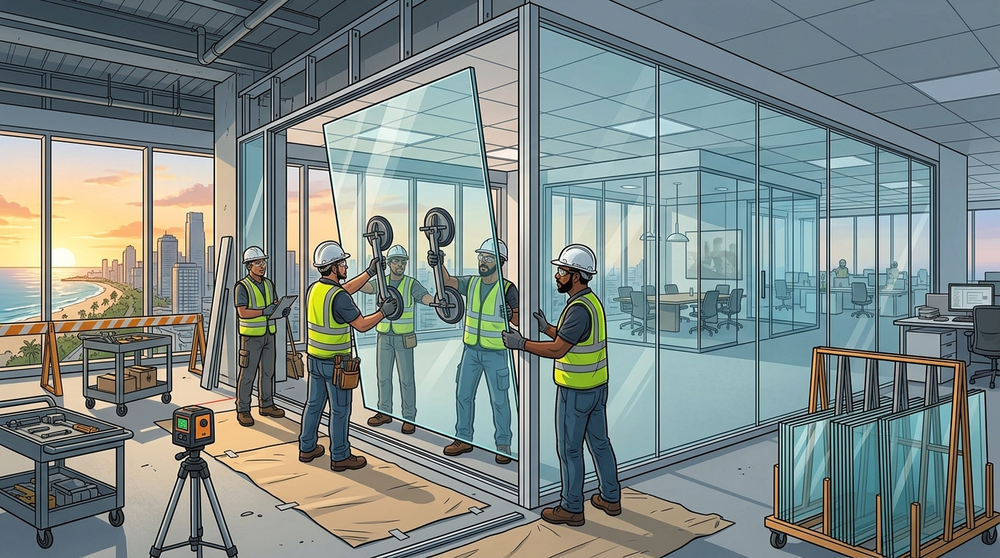

- 071 372 0667
- info@gauraconstruction.lk
Frameless, framed, foldable and fabric partition walls - designed, fabricated and installed for offices, showrooms, clinics and homes island-wide.

Partition walls divide interior space without the cost and footprint of a load-bearing wall, and the material you choose - glass, brick, fabric or a foldable system - shapes how a room looks, sounds and functions. As the No.1 construction company in Sri Lanka, Gaura Construction designs, fabricates and installs glass, foldable, framed and fabric partition walls for offices, showrooms, clinics and homes across all districts.
3-10 days for standard glass or fabric partitions; 2-4 weeks for large foldable systems.
Foldable and movable panels let one room become two, on demand, without construction.
Site survey, design and material selection, fabrication, installation, and finishing.
A partition wall divides one room into two or more functional spaces without carrying structural load, which makes it far faster and cheaper to build, move or remove than a permanent wall. In Sri Lankan offices, showrooms and homes, glass has become the preferred partition wall design because it keeps daylight flowing between spaces, reads as modern and premium, and can be installed in days rather than weeks.
As the No.1 construction company in Sri Lanka, Gaura Construction fits partition wall design into the same in-house team that handles interiors, aluminium and MEP - so glazing, framing, lighting and finishes are coordinated from one site team. Explore our full construction services and browse recent completed projects for real installation examples.
Glass partition wall design ranges from fully frameless systems with polished edges and patch fittings, to slim aluminium-framed glazing, to sliding and foldable configurations that let a space be reconfigured throughout the day. Glass can be clear, frosted, manifested with a pattern for privacy bands, or acoustic-rated with laminated interlayers for meeting rooms and clinics.
Where full transparency is not needed, fabric-wrapped panels or a conventional brick partition wall can be mixed with glass sections - a common approach for reception areas, cabins and private offices that need both openness and acoustic control.
Final pricing depends on glass thickness, framing, hardware and whether the system is fixed or foldable. The ranges below are indicative starting points for budgeting.
| Partition Wall Type | Estimated Price (LKR) | What It Usually Includes |
|---|---|---|
| Frameless Glass Partition | 1,800 - 3,200 per sq.ft | 10-12mm toughened glass, patch fittings, polished edges |
| Framed / Aluminium Glass Partition | 1,200 - 2,200 per sq.ft | Aluminium frame, tempered glass, standard hardware and installation |
| Foldable / Movable Glass Partition | 3,500 - 6,500 per sq.ft | Folding track system, acoustic seals, mobile glass or panel leaves |
| Fabric Partition Wall (Acoustic) | 950 - 1,800 per sq.ft | Fabric-wrapped acoustic panel, lightweight frame, colour finish |
| Brick Partition Wall | 650 - 1,100 per sq.ft | Blockwork, plastering, paint-ready finish |
For a full BOQ-based estimate, use our construction cost calculator and request a detailed proposal.
A good partition wall matches the room's real use - light, sound, and flexibility - not just the floor plan. Great partition wall delivery makes a space adaptable for years, not just at handover. - Gaura Construction (Pvt) Ltd
Gaura Construction delivers complete partition wall design and installation in Sri Lanka - glass, foldable, framed, fabric and brick - with in-house design, BOQ, and turnkey execution. Start with our construction cost calculator, review our full service scope, and check our company profile before consultation.